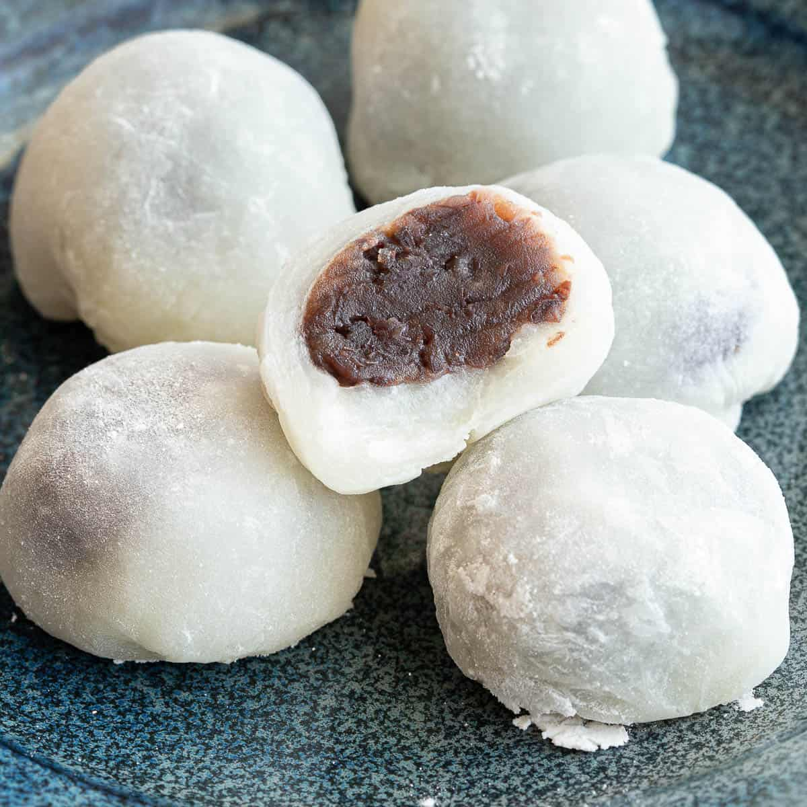

Mochi

Description
Mochi is a bun-shaped Japanese dessert made from sweet glutinous
rice flour, or mochigome. It has a soft, chewy texture that is
somewhat elastic. Mochi is often flavored with matcha (or green tea powder),
which gives it a light green hue.
Ingredients
- red bean paste
- glutinous rice flour
- green tea powder
- water
- sugar
- cornstarch
Steps
- Wrap red bean paste in foil and freeze until solid.
Once the paste is frozen, divide and roll into eight equal balls.
Set aside or return to the freezer.
- Mix sweet rice flour and green tea powder in a microwave-safe bowl.
Stir in water, then stir in the sugar. Mix until smooth.
Cover bowl with plastic wrap and cook in the microwave for about
3 minutes and 30 seconds. Stir the mixture, then heat in the microwave
for an additional 15-30 seconds.
- Dust your work surface with cornstarch. Roll the (still hot) dough into balls.
Flatten each ball and place one frozen red bean paste ball in the center.
Pinch the mochi over the paste until covered. Sprinkle with more cornstarch
and place the mochi (seam side down) in a paper muffin liner.
Repeat the steps until all the dough and frozen paste is used.